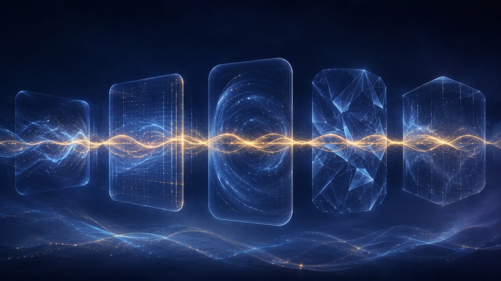

Causality Is an Invariance
A theory is a statement of causality. And the standard way to hunt one puts the noisiest object in the system on the witness stand: change one thing, watch the output. The signal was never in what changed. It's in what refused to.
Every builder who takes causality seriously arrives at the same instrument. The holdout test. Change one input, freeze the rest, read the output. It is the cleanest tool we have, and it fails in two famous ways. The change takes months to propagate, so by the time the output moves, a hundred other things have moved with it. Or the system is reflexive: it watches you probing and answers differently each time, the way markets and teenagers do. So you respond with rigor: more tests, tighter controls, bigger samples. And the readings stay noisy, because the problem was never your rigor. It was your question.
The question that eats itself
"What changed the output" is a question addressed to one world. One world cannot answer it. A single intervention hands you a single sample from a distribution you will never see the rest of, tangled with lag, confounds, and luck. Run the same intervention twice in a reflexive system and you aren't repeating an experiment. You're running two different ones, because the system remembers the first.
And it gets worse the harder you push. Lean on the same probe often enough and the system learns the shape of your hand. The probe stops measuring the mechanism and starts measuring the system's response to being probed. Goodhart in a lab coat: coupling decay under optimization pressure, except the proxy decaying is your experiment itself.
The failure is baked into the grammar. Change is the noisiest thing a system produces. Everything changes it: noise changes it, lag changes it, your measurement changes it. Interrogating change is interrogating the crime scene's weather.
Ask what survived
Here is the reframe that dissolves the problem instead of adding controls to it. A cause was never the thing that changed the output once. A cause is the relationship that held in every world you have. Correlations are residents of one dataset. Move the dataset and they vanish like property values. Mechanisms travel. Drop them into a new regime, a new market, a new decade, and they hold. And that holding is not evidence of the mechanism. It is what the word mechanism means.
Now run the definition backward and it pays for itself twice. An intervention manufactures a world where one variable is severed from its usual parents. Expensive, slow, one world per experiment. But nature manufactures worlds all day. Every regime shift, every domain change, every platform migration, every reorg is a severing someone else already paid for. You don't need to run the experiment. You need to notice that it ran.
An intervention is an environment you paid for. An environment is an intervention nature ran for free. Same object, two prices.
The literature calls this invariant causal prediction: the causal predictors are exactly the ones whose relationship to the outcome stays stable across environments and interventions. But it earns its place here as a builder's move, not a citation. Stop designing experiments. Start collecting worlds, and sieve.
The ladder is a sieve
Everyone reads the ladder of causation as a staircase. Rung one, seeing: correlations from passive data. Rung two, doing: interventions. Rung three, imagining: counterfactuals. And the theorem underneath is unforgiving: no volume of rung-one data lifts you to rung two. So the standard reading concludes: go acquire intervention machinery. Build the lab.
Right theorem. Wrong architecture. You do not climb to rung two. You collect it. If your corpus spans enough environments, the do-operations are already inside it: history ran them, markets ran them, your users ran them, and the invariance sieve is how you cash the receipts. Rung two is not a faculty. It is a filter over rung one, applied across worlds.
And rung three, the one that sounds like magic, is the cheapest of all, once you hold the invariant. A counterfactual is a replay: freeze the mechanism that survived every world, swap in the input that didn't happen, run it forward. "What would have happened if" is not imagination. It is a query against the survivor. The ladder isn't climbed. It's compiled: environments in, invariants out, replays on demand.
The anomaly budget
The sieve tells you what to keep. It does not tell you where to look, and looking is the scarce thing. Because here is the trap nobody warns you about: anomalies are cheap. Noise is nothing but anomalies. A system that chases every exception is a system that has outsourced its attention to its static.
So you need a price. The only anomaly worth buying is the one that promises compression: the exception that, if explained, retires a whole ledger of other exceptions with it. Mercury's perihelion drifted 43 arcseconds per century past Newton's ledger. A rounding error. Astronomers patched it for decades. A hidden planet. A fudged exponent. Einstein spent years on it, because that particular rounding error sat at the exact joint where the reigning theory paid its rent in patches. It wasn't the largest exception. It was the most leveraged one.
Surprise and curiosity are not the same instinct, and the difference is the whole game. Surprise is prediction error: the anomaly detector, always on, mostly wrong. Curiosity is the expected derivative of compression: the wager that struggling right here will shrink the book. The thing we call taste in a scientist (knowing which exception is load-bearing) is a pricing function on anomalies. And a pricing function can be built: score each exception by how much of the exception ledger dies if it's explained. Spend attention there. Nowhere else.
Two-part code
Which brings us to the accounting rule that makes all of this enforceable. Write any theory's cost as two columns: model bits plus exception bits. The bits to state the rules, plus the bits to list everywhere the rules fail.
Lorentz and FitzGerald had relativity's equations before Einstein did. As patches. The ether experiment failed, so they appended a contraction formula, moving cost from the exception column to the model column, one entry for one entry. The books balanced and nothing compressed. That is what patching is: bookkeeping wearing the costume of physics. Einstein's move was to promote the stubborn constraint to an axiom (light's speed holds in every frame, no exceptions) and rederive the world from it. One line in the model column. The entire exception ledger, retired.
Simplicity is not an aesthetic preference. It is the accounting rule that forbids Lorentz-style patches. A relationship earns the word cause only if it pays rent twice: it survives every environment, and it shortens the code. Survival without compression is a coincidence you haven't caught yet. Compression without survival is a curve fit to one world. Demand both.
Four moves
The architecture writes itself, and none of it requires new physics.
Collect worlds. Every regime shift, migration, and market turn is a do-operation with the invoice already paid. Log it as an environment, not as noise.
Sieve. Keep only the relationships that held in all of them. What holds in one world is a tenant. What holds in every world is a law.
Charge rent. Every survivor must shorten the two-part code or leave. Patches pay one-for-one. Axioms retire ledgers. Audit the difference without sentiment.
Replay. Answer every "what if" by freezing the surviving mechanism and swapping the input. Counterfactuals are queries, not séances.
And that, in the end, is the full weight of keeping what works. Works was never "produced a good output once." Works means held: across environments, under perturbation, after the patch budget was audited. Keeping what works was always the causal criterion, stated small enough to live by.
Stop asking what changed the output. Ask what relationship survived every perturbation. Then keep only the survivors that shrink the book.
Intellectual lineage
- Judea Pearl — The Ladder of Causation — seeing, doing, imagining. Read here as a sieve to compile, not a staircase to climb.
- Peters, Bühlmann & Meinshausen — Invariant Causal Prediction — causal predictors are the ones whose relationship to the outcome is invariant across environments.
- Arjovsky et al. — Invariant Risk Minimization — the same sieve, stated as a deep-learning objective.
- Schmidhuber — Formal Theory of Creativity, Fun, and Intrinsic Motivation — curiosity as the first derivative of compression progress, not raw surprise.
- Rissanen — Minimum Description Length — the two-part code: model bits plus exception bits, and the rent every theory pays.
- Noether's theorem — every symmetry is a conservation law: invariance as the deepest object physics has.
- Tests of general relativity — Mercury's perihelion — 43 arcseconds per century: the most leveraged rounding error in the history of measurement.
The sieve, shipped
Trinity Local is what this essay looks like when you point it at your own transcripts. A rejection pair (the model said one thing, you substituted another) is a do-operation on a conversation, and Stage 0 mines those interventions deterministically from disk, no interpretation invited. The three providers are three environments no single lab can see across, which is precisely why the invariants are invisible to each of them and visible to the layer above.
Then the sieve: a tension enters your lens only after it ratifies across three or more topical basins: invariance across environments as a shipped precondition, not a metaphor. What holds in one basin is a quirk. It stays in the routing table, with the other patches. What holds everywhere becomes the lens: the axioms. The dream pass is the two-part code being rebalanced (contradictions resolved, neighbors merged, old entries reweighted) and every lens entry carries backreferences to the exact rejection pairs that justify it, so the exception ledger stays auditable down to the line. The personal eval even charges rent by name: one of its four axes is COMPRESSION. Ask what survived your own perturbations. That's the lens.
Part of an ongoing series on durable systems.